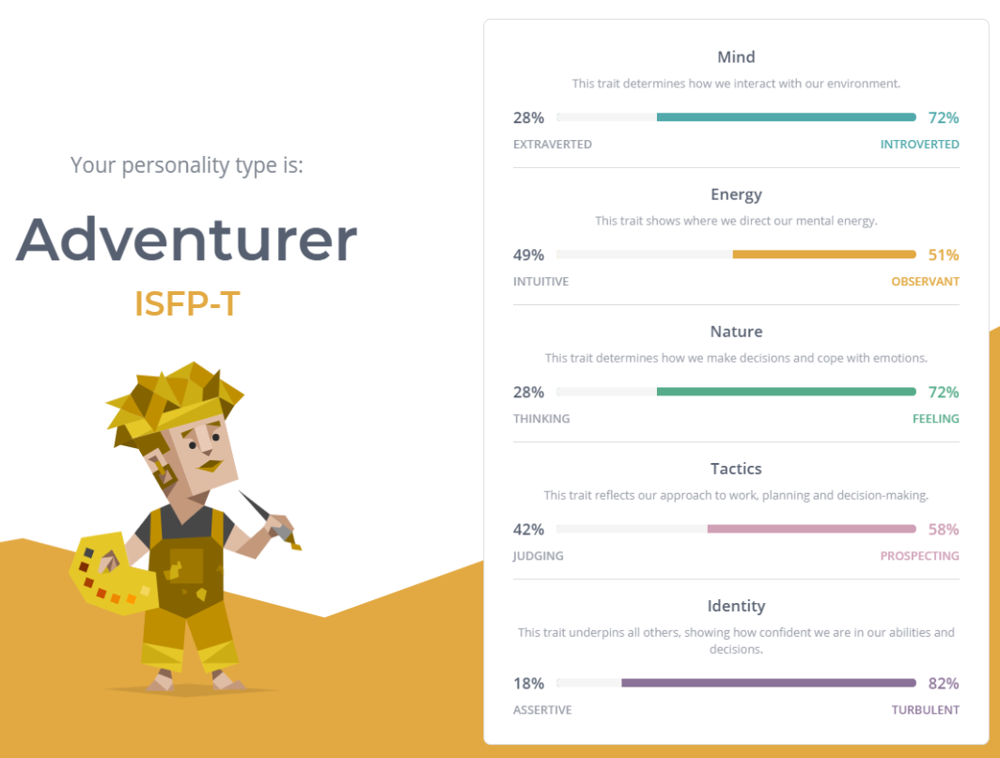
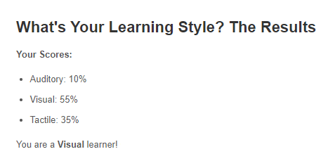
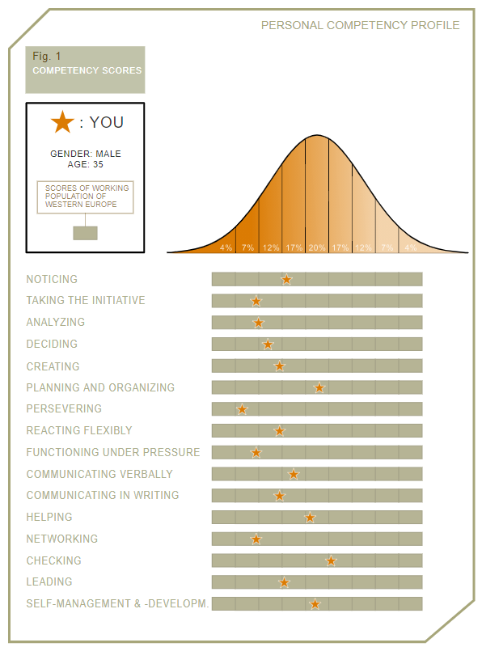

Personal Profile
The results of an online Myers-Briggs test.
After completing the 16 Personalities test online (16personalities.com), apparently I am an ‘Adventurer (ISFP). This type of person is depicted as being “known for their kindness and artistic skills” (16personalities – conclusion). These people use their thoughts, wishes and emotions to make important decisions. They are often thinking about the future and trying to plan ahead.
The results of an online learning style test.
According to the website educationplanner.org, and also how-to-study.com, I am a visual learner. I need to see something in order to learn or retain the information I am being presented with. There are supposedly three types of ques that people learn best from. These are visual, auditory, and tactile. To determine the results, a person is asked to answer 20 questions which have to do with what we notice most in different situations
The results of one further online test of your choosing.
123test.com - Competency TestI completed the competency test on 123test.com. This test was carried out by asking 155 questions about topics ranging from how we perceive emotions to if we believe we have good time management skills. The results are then shown as to how you stand in relation to the amount of people that answered similarly or the same to you. So rather than focussing on what your strengths or weaknesses may be, it shows your results simply in comparison to the percentage of people that answered the same or very similarly as you.
In addition to the results themselves, you should answer each of the following questions below with one paragraph.
What do the results of these tests mean for you?
How do you think these results may influence your behaviour in a team?
How should you take this into account when forming a team?
The results of these tests in my opinion can be very vague, and I believe that even though many of us fit into one type as identified, people can still fit into more than one type of character. The test results for me were quite accurate one could say. Especially the results from Educationplanner.org. I definitely learn better when I see things presented in front of me or are shown to me in a visual form. I am cautious and like to think ahead before just jumping in and doing something. Therefore, when I am working in a team, it might be good for me to work with other people that are less self-conscious and have good ideas and just run with them and get started. My personality type just needs a push to get going sometimes. After completing these tests I am definitely more aware of these character traits. However in a team environment I would still feel more comfortable being a follower and not a leader, unless I am certain that I know my topic and content.